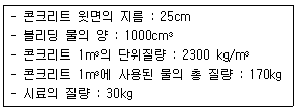
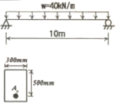
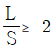
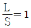
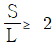
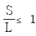
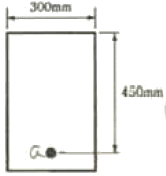
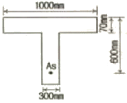

콘크리트기사 (2006-08-06 기출문제)
1과목: 재료 및 배합
1. 콘크리트에 부순 굵은골재 또는 부순 잔골재를 사용하는 경우에 대한 설명으로 틀린 것은?
- 부순 잔골재를 사용한 콘크리트는 강모래를 사용한 콘크리트와 동일한 슬럼프를 얻기 위해서는 단위수량이 약 5~10%정도 많이 요구된다.
- 부순 굵은골재를 사용한 콘크리트는 강자갈을 사용하고 동일한 물-시멘트비를 적용한 콘크리트보다 약 10% 정도 강도가 감소된다.
- 부순 굵은골재를 사용한 콘크리트는 수밀성, 내구성 등을 개선시키기 위해 AE제, 감수제 등을 적당량 사용하는 것이 좋다.
- 부순 잔골재를 사용한 콘크리트의 건조수축률은 미세한 분말량이 많아질수록 증가한다.
(정답률: 알수없음)

2. 콘크리트용 잔골재에는 점토를 비롯한 유해물질이 함유될 수 있다. 유해물질로 인한 콘크리트 품질의 저하를 방지하기 위하여 잔골재의 유해물 함유량을 규제 하는데 다음 중 항목별 유해물 허용 한도(질량백분율)가 틀린 것은?
- 점토 덩어리 - 2.0
- 0.08mm체 통과량 (콘크리트의 표면이 마모작용을 받는 경우) - 3.0
- 석탄, 갈탄 등으로 밀도 2.0g/cm3의 액체에 뜨는 것(콘크리트의 외관이 중요한 경우) - 0.5
- 염화물이온량 - 0.02
(정답률: 62%)
3. 콘크리트의 배합설계에 관하여 옳지 않은 것은?
- 작업에 적합한 워커빌리티를 갖는 범위 내에서 단위수량은 가능한 한 작게 하여야 한다.
- 물-시멘트비는 소요의 강도, 내구성, 수밀성 및 균열저항성 등을 고려하여 정한다.
- 콘크리트의 슬럼프는 운반, 타설, 다지기 등의 작업에 알맞은 범위 내에서 가능한 작게 하여야 한다.
- 잔골재율은 소요의 작업성을 얻을 수 있는 범위 내에서 단위수량이 최대가 되도록 시험에 의하여 정한다.
(정답률: 80%)
4. 고강도콘크리트의 배합에 관한 설명으로 잘못된 것은?
- 유동성을 향상시키고 배합시의 단위수량을 줄이기 위해 고성능 감수제를 사용한다.
- 플라이애시 등의 혼화재를 사용하면 시멘트량이 상대적으로 줄어들기 때문에 장기적인 소요강도를 얻기가 힘들다.
- 기상의 변화가 심하거나 동결융해에 대한 대책이 필요한 경우를 제외하고는 AE제를 사용하지 않는 것을 원칙으로 한다.
- 고강도콘크리트의 단위시멘트량은 소요 워커빌리티와 강도가 얻어지는 범위에서 가능한 적게 되도록 한다.
(정답률: 70%)
5. 물-시멘트비 50%, 잔골재율 43.0%, 공기량 5.0% 및 단위수량 170kg의 조건으로 한 콘크리트의 시방배합결과에 대한 설명으로 틀린 것은? (단, 시멘트 밀도 : 3.15g/cm3, 잔골재 표면건조 포화상태 밀도 : 2.57g/cm3, 굵은골재 표면건조 포화상태 밀도 : 2.65g/cm3)
- 단위시멘트량은 340kg이다.
- 골재의 절대용적은 672ℓ이다.
- 단위잔골재량은 798kg이다.
- 단위굵은골재량은 1.015kg이다.
(정답률: 알수없음)
6. 한중콘크리트의 배합시 고려해야 할 사항으로 잘못된 것은?
- 물-시멘트비는 원칙적으로 60% 이하로 한다.
- AE콘크리트를 사용하는 것을 원칙으로 한다.
- 가능한 한 단위수량을 감소시킴으로서 낮은 온도에서 많아지는 블리딩을 감소시켜 콘크리트의 온도저하를 방지할 수 있다.
- 일반적으로 콘크리트 수화열에 의한 내ㆍ외부의 온도차를 줄이기 위해 중용열 포틀랜드시멘트를 사용한다.
(정답률: 알수없음)
7. 시멘트의 일반적 특성과 용도에 관한 다음 설명 중 틀린 것은?
- 조감포틀랜드시멘트는 초기 압축강도 발현이 커서 프리스트레스트콘크리트에 사용하고 있다.
- 중용열 포틀랜드시멘트는 수화열이 보통포틀랜드시멘트와 조강포틀랜드시멘트의 중간정도로 한중콘크리트에 사용하고 있다.
- 고로시멘트는 수화열 발열량이 적어 매스콘크리트 구조물에 사용하고 있다.
- 내황산염시멘트는 화학저항성이 우수하여 지하 구조물용에 사용하고 있다.
(정답률: 알수없음)
8. 다음 중 콘크리트용으로 사요하는 굵은 골재로서 적합하지 않은 것은?
- 절대건조밀도가 2.6g/cm3인 골재
- 흡수율이 3.4%인 골재
- 마모율이 38%인 골재
- 인정성이 11%인 골재
(정답률: 알수없음)
9. 일반 콘크리트의 배합 관한 설명으로 틀린 것은?
- 콘크리트의 수밀성을 기준으로 물-시멘트비를 정할 경우, 그 값은 60% 이하로 하여야 한다.
- 무근콘크리트에서 일반적인 경우 슬럼프값의 표즌은 50~150mm이다.
- 일반적인 구조물에서 굵은골재의 최대치수가 20mm 또는 25mm를 표준으로 한다.
- 일반적으로 잔골재율을 크게 하면 소요의 워커빌리티를 얻기 위해 필요한 단위수량이 감소한다.
(정답률: 46%)
10. 잔골재의 품질관리를 위해 행하는 시험 항목이 아닌 것은?
- 흡수율시험
- 입도시험
- 물리ㆍ화학적 안정성시험
- 슬럼프시험
(정답률: 알수없음)
11. 시멘트 모르타르의 압축강도 시험과 관계 없는 것은?
- 시험한 전 시험체 중에서 평균값보다 10%이상의 강도 차이가 나는 것은 압축강도 계산에 넣지 않는다.
- 흐름판을 1.27cm 낙하 높이로 15초 동안 25회 낙하한다.
- 성형된 시험체는 24~48시간 동안 습기함이나 양생실에 넣고 보관 후 탈형하여 양생수조에서 양생한다.
- 표준 모르타르의 건조 재료 배합은, 시멘트와 표준사를 1:2.45 무게비로 섞는다.
(정답률: 알수없음)
12. 콘크리트에 이용되는 혼화재에 대한 설명으로 틀린 것은?
- 실리카 퓸을 사용한 콘크리트는 마이크로 필러효과와 포졸란 반응에 의해 콘크리트의 강도가 증가한다.
- 팽창재는 에트린가이트 및 수산화칼슘 등의 생성에 의해 콘크리트를 팽창시킨다.
- 고로슬래그 미분말을 사용한 콘크리트의 초기강도는 포틀랜드시멘트 콘크리트보다 작고 이러한 경량은 슬래그치환율이 클수록 현저하게 나타난다.
- 플라이애시는 유리질 입자의 장재수경성에 의해 콘크리트의 초기강도를 증가시킨다.
(정답률: 70%)
13. 시멘트 클링커의 주요광물이 시멘트 특성에 미치는 영향으로 옳지 않은 것은?
- 조기강도 발현에 대한 영향은 C3A가 C2S보다 크다.
- 장기강도 발현에 대한 영향은 C2S가 C3S보다 크다.
- 수화열에 대한 영향은 C3S가 C3S보다 적다.
- 화학저항성에 대한 영향은 C4AF가 C3A보다 적다.
(정답률: 73%)
14. 잔골재율(S/a) 및 단위수량보정시 잔골재율의 보정에 관련이 없는 조건은?
- 잔골재 조립률
- 굵은골재 조립률
- 물-시멘트비
- 공기량
(정답률: 50%)
15. 콘크리트의 물성을 개선하기 위하여 사용되는 AE제에 대한 설명 중 틀린 것은?
- 미세한 공기포를 다량으로 연행하므로써 콘크리트의 내동해성을 증가시킨다.
- 미세한 공기포를 다량으로 연행하므로써 콘크리트의 워커빌리티를 개선시킨다.
- AE제에 의해 생성된 연행공기의 영향으로 단위수량을 줄이는 효과가 있다.
- AE제에 의해 생성된 연행공기의 영향으로 물-시멘트비가 같은 일반적인 콘크리트보다 강도를 향상시키는 효과가 있다.
(정답률: 50%)
16. 다음 중 골재의 안정성 시험을 위해 사용하는 용액은?
- 수산화나트륨 포화용액
- 황산나트륨 포화용액
- 염화나트륨 포화용액
- 수산화칼슘 포화용액
(정답률: 알수없음)
17. 콘크리트 배합설계에서 잔골재의 절대용적이 360ℓ, 굵은 골재의 절대용적이 540ℓ인 경우 잔골재율은 얼마인가?
- 30%
- 36%
- 40%
- 67%
(정답률: 알수없음)
18. 적당한 입도를 가진 골재를 사용함으로써 얻을 수 있는 콘크리트의 특징을 설명한 것으로 틀린 것은?
- 콘크리트의 워커빌리티가 증대된다.
- 소요의 품질을 얻기 위해 단위시멘트량이 증대된다.
- 건조수축이 적어지며 내구성이 증대된다.
- 재료분리 현상이 감소된다.
(정답률: 알수없음)
19. 콘크리트용 굵은골재에 대한 설명으로 옳지 않은 것은?
- 굵은골재로서 사용할 자갈의 절건밀도는 2.5g/cm3 이상의 값을 표준으로 한다.
- 무근콘크리트에 사용하는 굵은골재 중 점토덩어리와 연한 석편의 합은 5%를 초과하지 않아야 한다.
- 굵은골재로서 사용할 자갈의 흡수율은 3.0% 이하의 값을 표준으로 한다.
- 황산나트륨에 의한 안정성 시험을 할 경우, 조작을 5번 반복했을 때 굵은골재의 손실질량백분율의 한도는 일반적으로 12%로 한다.
(정답률: 알수없음)
20. 구조물에 사용된 콘크리트의 압축강도가 설계기준강도(fck)보다 작아지지 않도록 현장 콘크리트의 품질변동을 고려하여 콘크리트의 배합강도(fcr)를 결정한다. 설계기준강도가 30MPa인 경우 배합강도는 얼마로 하여야 하는가? (단, 압축강도의 시험횟수는 14회 이하이다.)
- 38.5MPa
- 37.5MPa
- 36MPa
- 34.5MPa
(정답률: 알수없음)
2과목: 제조, 시험 및 품질관리
21. 콘크리트의 품질관리의 관리도에서 계수값 관리도에 포함되지 않는 것은?
- P관리도
- C관리도
- U관리도
- x관리도
(정답률: 알수없음)
22. 콘크리트의 받아들이기 품질관리에서 염화물 이온량은 원칙적으로 얼마 이하로 규제하는가?
- 0.15kg/m3
- 0.20kg/m3
- 0.30kg/m3
- 0.60kg/m3
(정답률: 82%)
23. 일반콘크리트에서 제빙화학제가 사용되는 콘크리트의 물-시멘트비는 최대 얼마 이하이어야 하는가?
- 40%
- 45%
- 50%
- 55%
(정답률: 알수없음)
24. 콘크리트의 동결융해 시험에서 300싸이클에서 상대 동탄성 계수가 76%라면, 이 공시체의 내구성 지수는?
- 76%
- 81%
- 85%
- 92%
(정답률: 알수없음)
25. 굳지 않은 콘크리트의 슬럼프 시험시 한 층의 다짐횟수는 몇 회인가?
- 15회
- 20회
- 25회
- 30회
(정답률: 70%)
26. 콘크리트의 중성화 시험을 판정하기 위해 사용하는 용액은?
- 질산은 용액
- 수은
- 페놀프탈레인 용액
- 황산
(정답률: 알수없음)
27. 콘크리트의 압축강도에 영향을 미치는 주된 시험조건이 아닌 것은?
- 공시체의 형상 및 치수의 영향
- 재령 및 양생방법의 영향
- 물-시멘트비의 영향
- 거푸집 강도 및 강성의 영향
(정답률: 알수없음)
28. AE제를 사용한 경우에 연행되는 공기량의 설명으로 옳은 것은?
- 물-시멘트비가 클수록 많게 된다.
- 슬럼프가 작을수록 많게 된다.
- 단위 잔골재량이 작을수록 많게 된다.
- 콘크리트의 온도가 높을수록 많게 된다.
(정답률: 알수없음)
29. 다음은 콘크리트 블리딩 시험 결과이다. 블리딩량을 구하면?

- 2.0cm3/cm2
- 2.5cm3/cm2
- 3.0cm3/cm2
- 3.5cm3/cm2
(정답률: 34%)
30. KS F 2402 콘크리트의 슬럼프 시험 방법에 규정된 내용 중 콘크리트를 채우기 시작하여 슬럼프콘을 들어올려 종료할 때까지 시간은?
- 1분 30초 이내
- 2분 이내
- 2분 30초 이내
- 3분 이내
(정답률: 알수없음)
31. 굳지 않은 콘크리트의 재료분리를 생기게 하는 원인이 아닌 것은?
- 입자가 거친 잔 골재를 사용한 경우
- 단위골재량이 너무 많은 경우
- 단위수량이 너무 많은 경우
- 굵은 골재의 최대치수가 작은 경우
(정답률: 알수없음)
32. 알칼리 골재 반응을 일으키는 알칼리의 주요 공급원 중 시멘트에서 유입되는 것은?
- Na2O
- NaCl
- SiO2
- Cl
(정답률: 알수없음)
33. 매스 콘크리트의 온도 균열 방지대책으로 틀린 것은?
- 혼화재료는 가급적 피하는 것이 좋다.
- 균열제어철근을 배근하여 변형을 구속한다.
- 유동화 콘크리트 공법을 도입한다.
- 발열량이 적은 시멘트를 사용하고, 단위 시멘트량을 줄인다.
(정답률: 70%)
34. 레디믹스크 콘크리트의 강도시험은 원칙적으로 몇 m3당 한번 하는가?
- 150m3
- 200m3
- 250m3
- 300m3
(정답률: 알수없음)
35. 다음 중 콘크리트의 공기량 측정법으로 사용되지 않는 방법은?
- 수주 압력법
- 초음파법
- 공기실 압력법
- 질량법
(정답률: 알수없음)
36. 염화칼슘(CaCl2)을 혼합한 콘크리트의 성질 중 옳지 않은 것은?
- 염화칼슘을 시멘트량의 1~2% 정도 사용하면 조기의 발열이 증가한다.
- 적당한 양의 염화칼슘을 첨가하면 마모에 대한 저항성이 커진다.
- 응결이 촉진되고 콘크리트의 슬럼프치가 감소된다.
- 적당한 양의 염화칼슘을 첨가하면 알칼리 골재반응에 대한 저항성이 커진다.
(정답률: 55%)
37. 콘크리트의 품질관리에서 관리특성으로 이용되지 않는 것은?
- 콘크리트의 슬럼프 시험
- 콘크리트의 감도 시험
- 골재의 입도 시험
- 침입도 시험
(정답률: 80%)
38. 콘크리트의 품질변동을 정량적으로 나타내는데 있어서, 10개 공시체의 압축강도를 측정한 결과의 평균강도가 25MPa이고, 표준편차가 2.5MPa인 경우의 변동계수는 얼마인가?
- 10%
- 15%
- 20%
- 25%
(정답률: 알수없음)
39. 1일 콘크리트 사용량이 약 200m3인 경우 필요한 믹서의 용량은? (단, 1일 작업시간은 8시간, 1회 비벼내기 시간 2분, 작업효율 E=0.8이다,)
- 0.55m3
- 1.⑤m3
- 1.55m3
- 2.⑤m3
(정답률: 70%)
40. 동일 품질의 콘크리트에 대한 강도시험 중 값이 최소인 것은?
- 압축강도
- 휨강도
- 전단강도
- 인장강도
(정답률: 알수없음)
3과목: 콘크리트의 시공
41. 팽창콘크리트의 팽찰률은 재령 몇 일의 시험치를 기준으로 하는가?
- 3일
- 7일
- 28일
- 90일
(정답률: 알수없음)
42. 수밀콘크리트에 관한 설명으로 잘못된 것은?
- 콘크리트 구조물 공사에 있어서 수밀성을 높게 요구하는 부위에 사용하는 콘크리트이다.
- 수밀콘크리트는 터널, 공동구 및 각종 저장시설, 상하수도 시설, 저수조 등에 사용한다.
- 일반적으로 산ㆍ알칼리ㆍ해수ㆍ동결융해에 대한 저항력이 크고 풍화를 방지하고 전류의 해를 받을 우려도 적다.
- 콘크리트의 슬럼프는 되도록 크게 하고 물-시멘트비는 60%이하를 표준으로 한다.
(정답률: 90%)
43. 고강도콘크리트 배합설계에 있어서 주의사항을 나타낸 것이다. 틀린 것은?
- 단위수량은 180kg/m3 이하로 하고 소요 워커빌리티를 얻을 수 있는 범위 내에서 가능한 작게 한다.
- 물-시멘트비는 일반적으로 50% 이하로 한다.
- 슬럼프는 유동화콘크리트로 할 경우 180mm 이하로 한다.
- 동결융해에 대한 대책이 필요한 경우를 제외하고는 공기연행제를 사용하지 않는다.
(정답률: 알수없음)
44. 일반콘크리트의 비비기에 대한 설명으로 틀린 것은?
- 콘크리트의 재료는 반죽된 콘크리트가 균등하게 될 때까지 충분히 비빈다.
- 재료를 투입하는 순서는 믹서의 형식, 비비기 시간, 골재의 종류 등에 영향을 받지 않는다.
- 비비기 시간은 시험에 따라 정하는 것을 원칙으로 한다.
- 비비기는 미리 정해 둔 비비기 시간의 3배 이상 계속해서는 안된다.
(정답률: 알수없음)
45. 다음은 서중 콘크리트의 시공에 대한 설명이다. 옳지 않은 것은?
- 콘크리트를 타설할 때의 콘크리트 온도는 35℃이하여야 한다.
- 콘크리트 타설은 콜드조인트가 생기지 않도록 하여야 한다.
- 콘크리트는 비빈 후 1.5시간 이내에 타설하여야 한다.
- 콘크리트 타설 후 양생을 3일 정도 실시하는 것이 바람직하다.
(정답률: 알수없음)
46. 프리팩트콘크리트용 잔골재의 입도는 주입모르타르의 유동성과 보수성을 좋게 하기 위하여 콘크리트표준시방서에서 표준입도 범위 및 조립률의 범위를 규정하고 있다. 이 때 조립률의 범위로서 옳은 것은?
- 0.6~1.3
- 1.4~2.2
- 2.3~3.1
- 6~7
(정답률: 58%)
47. 다음은 숏크리트 타설시 뿜어 붙일 면에 용수가 있을 경우의 대책이다. 옳지 않은 것은?
- 사면에 용수가 있을 경우에는 필터재, 시트를 부착하여 용수의 배수처리를 한다.
- 부분적으로 용수가 있을 때는 염화비닐 파이프, 비닐호스 등으로 용수를 처리한다.
- 암반의 절리 등에 용수가 있을 때는 배수구 등으로 용수를 처리한다.
- 뿜어 붙일 면보다 소량의 침출수가 있을 때는 습식 숏크리트 공법을 사용한다.
(정답률: 100%)
48. 콘크리트 타설시 시공이음을 둘 때 주의사항이다. 틀린 것은?
- 시공이음은 부재 압축력이 작용하는 방향과 직각이 되도록 설치하는 것이 원칙이다.
- 전단력이 큰 위치에 시공이음할 경우 요철 또는 흠은 만들어야 하지만 철근으로 보강하지 않는 것이 원칙이다.
- 시공이음 계획시 온도변화, 건조수축 등에 의한 균열발생에 대하여 고려해야 한다.
- 이미 친 콘크리트가 경화한 후에는 레이턴스 등을 제거하고 건조되어 있는 경우 충분히 물로 적신다.
(정답률: 알수없음)
49. 숏크리트의 리바운딩량을 저감시키는 방법으로 틀린 것은?
- 굵은 골재 최대치수를 작게 한다.
- 단위시멘트량을 크게 한다.
- 호스의 압력을 일정하게 유지한다.
- 벽면과 평행한 방향으로 분사시킨다.
(정답률: 90%)
50. 해양 콘크리트 구조물에 사용하기 위한 시멘트로서 특히 각종 해수의 작용에 대하여 내구성을 확보할 수 있는 것으로 적당하지 않은 것은?
- 조강시멘트
- 고로스래그시멘트
- 중용열포틀랜드시멘트
- 플라이애쉬시멘트
(정답률: 90%)
51. 포장콘크리트에 대한 설명 중 틀린 것은?
- AE콘크리트는 미끄럼저항이 적기 때문에 포장용콘크리트에는 이용할 수 없다.
- 포장콘크리트의 강도는 재령 28일에서 휨강도를 기준으로 한다.
- 양생기간은 현장양생공시체의 휨강도가 배합강도의 70%이상에 달할 때 까지 실시한다.
- 포장콘크리트에 사용하는 굵은골재는 미끄럼저항이 큰 최대치수 40mm 이하의 양질의 골재로 한다.
(정답률: 알수없음)
52. 다음은 한중콘크리트의 양생에 대한 설명이다. 옳은 것은?
- 콘크리트 타설 직후에 찬바람이 콘크리트 표면에 닿도록 한다.
- 가열보온 양생 중 가장 널리 사용되는 방법은 공간가열법이다.
- 초기양생 종료를 위한 강도의 확인은 표준양생 공시체를 이용한다.
- 균열방지를 위해 초기양생 종료 후에도 5일간 이상은 콘크리트 온도를 4℃ 이상 유지한다.
(정답률: 알수없음)
53. 해양콘크리트의 시공과 관련한 설명으로 틀린 것은?
- 만조위로부터 위로 0.6m, 간조위로부터 아래로 0.6m 사이의 감조부분에는 시공이음이 생기지 않도록 한다.
- 콘크리트가 충분히 경화되기 전에 해수에 씻기지 않도록 하며, 이 기간은 보통콘크리트 시멘트를 사용할 경우 대개 2일간이다.
- 모래입자를 포함하고 있는 유수작용을 심하게 받는 구조물에서는 콘크리트 표면을 보호하거나 철근의 피복두께를 증가시킨다.
- 강재와 거푸집과의 간격은 소정의 덮개를 확보되도록 하여야 하며, 거푸집에 접하는 간격재는 원칙적으로 본체 콘크리트와 동등 이상의 품질을 갖는 모르타르제 또는 콘크리트제를 사용하여야 한다.
(정답률: 60%)
54. 수중불분리성 콘크리트를 타설할 때 수중 유동거리는 몇 m 이하로 하여야 하는가?
- 5m 이하
- 7m 이하
- 8m 이하
- 10m 이하
(정답률: 알수없음)
55. 균열발생에 대한 대책을 기술한 것 중 적절하지 못한 것은?
- 시공 가능한 범위 내에서 가능한 한 낮은 슬럼프의 콘크리트를 타설하거나, 감수효과가 큰 혼화제를 사용하여 단위수량을 최소화한다.
- 수축저감제나 팽창제를 사용하거나, 섬유 등을 사용하면 균열을 제어할 수 있다.
- 피복부께가 부족할 경우 철근 부근으로 콘크리트의 인장에 의한 응력 집중이 발생하여 균열이 발생하기 쉬우므로 피복두께는 클수록 좋다.
- 콘크리트 타설 간격이 너무 길게 되면 콜드조인트가 발생하게 되므로 외기온도가 25℃이하에서는 2.5시간, 25℃를 초과할 때는 2.0시간 이내에 이어치기를 실시한다.
(정답률: 알수없음)
56. 서중콘크리트의 시공은 일평균 기온이 몇 ℃를 초과하는 것이 예상되는 경우에 실시하는가?
- 15℃
- 20℃
- 25℃
- 30℃
(정답률: 74%)
57. 프리팩트콘크리트의 설명으로 옳지 않은 것은?
- 대규모 프리팩트콘크리트를 적용할 경우 굵은 골재 최대치수는 40mm정도 이상으로 한다.
- 거푸집 설계에 있어 굵은 골재 투입시의 충격계수는 0.6~0.7로 본다.
- 프리팩트콘크리트의 강도는 원칙적으로 재령 28일 또는 재령 91일의 압축강도를 기준으로 한다.
- 일반 프리팩트콘크리트의 유하시간은 6~10초를 표준으로 한다.
(정답률: 30%)
58. 매스콘크리트의 균열유발줄눈에 대한 설명 중 틀린 것은?
- 균열유발줄눈에 따른 단면감소율은 5~10%가 적당하다.
- 균열유발줄눈의 간격은 4~5m를 기준으로 한다.
- 균열유발줄눈의 간격은 대략 콘크리트 1회치기 높이의 1~2배 정도가 바람직하다.
- 균열유발줄눈을 설치할 경우 비교적 쉽게 매스콘크리트의 균열제어를 할 수 있으나, 구조상의 위약부가 될 우려가 있으므로 구조형식 및 위치 등을 잘 선정하여야 한다.
(정답률: 46%)
59. 콘크리트의 운반 및 치기 작업에 대한 다음의 서술 중 소요의 품질 확보를 위하여 바람직하지 않은 것은?
- 넓은 장소에서 콘크리트를 칠 경우 공급원으로부터 먼 쪽에서 시작하여 가까운 쪽으로 끝내는 것이 좋다.
- 비비기로부터 치기가 끝날 때까지의 시간은 외기온도가 25℃ 이상일 때는 1.5시간을 넘어서는 안된다.
- 콘크리트가 닿았을 때 흡수할 우려가 있는 곳은 미리 습하게 해두어야 하며, 이 때 물이 고이지 않도록 주의한다.
- 거푸집내에서 타설한 콘크리트의 이동은 내부진동기를 사용하여 횡방향으로 이동시키면서 시공한다.
(정답률: 알수없음)
60. 다음 중 수중콘크리트의 설명으로 틀린 것은?
- 일반 수중콘크리트의 물-시멘트비는 55%이하, 단위시멘트량은 370kg/m3이상으로 한다.
- 일반 수중콘크리트는 수중 시공시의 강도가 표준공시체 강도의 0.6~0.8배가 되도록 배합강도를 설정한다.
- 지하연속벽에 사용하는 수중콘크리트의 경우, 지하연속벽을 가설만으로 이용할 경우에는 단위시멘트량은 300kg/m3 이상으로 하는 것이 좋다.
- 수중콘크리트 타설시 완전히 물막이를 할 수 없는 경우에는 유속은 1초간 50mm 이하로 하여야 한다.
(정답률: 75%)
4과목: 구조 및 유지관리
61. 알칼리 골재반응이 원인으로 추정되는 부재의 향후 팽창량을 예측하기 위하여 필요한 시험은?
- SEM 시험
- 코어의 잔존팽창량 시험
- 압축강도 시험
- 배합비 추정시험
(정답률: 알수없음)
62. fck=27MPa, fy=400MPa로 된 보에서 표준갈고리가 있는 인장 이형철근의 기본정착길이로 가장 적합한 것은? (단, 사용 철근은 D25(철근의 공칭지름은 25.4mm)이다.)
- 442mm
- 489mm
- 515mm
- 603mm
(정답률: 47%)
63. 그림과 같은 단철근 직사각형보의 전단에 대한 위험단면에서 평균전단응력은?

- 0.9MPa
- 1.2MPa
- 1.5MPa
- 1.8MPa
(정답률: 알수없음)
64. 콘크리트 중 염화물이온 함유량 측정방법으로 옳지 않은 것은?
- 페놀프탈레인법
- 모아법
- 염화은 침전법
- 전위차 적정법
(정답률: 알수없음)
65. 보수공법 중 에폭시 수지 등을 수동식으로 주입하는 수동식 주입법의 특징으로 잘못된 것은?
- 다량의 수지를 단시간에 주입할 수 있다.
- 폭 0.5mm이하의 균열에는 주입이 곤란하다.
- 주입용 수지의 점도에 제약을 받는다.
- 수입시 압력 펌프를 필요로 한다.
(정답률: 알수없음)
66. 다음 중 철근간격 및 사용에 대한 설명으로 틀린 것은? (단, d는 보의 유효깊이(mm)이다.)
- 전단철근의 수직스터럽의 간격은 0.5d이하, 또 600mm 이하여야 한다.
- 여러 개의 철근을 묶어서 사용하는 다발철근을 이형철근으로서, 그 개수는 5개 이상이어야 한다.
- 나선철근과 띠철근 기둥에서 종방향 철근의 순간격은 40mm 이상이어야 한다.
- 보의 추철근을 2단 이상으로 배치할 경우 연직 순간격은 25mm 이상이어야 한다.
(정답률: 50%)
67. 바닥 슬래브 보강용으로 적합하지 않는 공법은 어느 것인가?
- 보의 증설
- 강판 접착
- 강판 라이닝 보강
- 탄소 섬유시트 접착
(정답률: 알수없음)
68. 육안관찰이 가능한 개소에 대하여 성능저하나 열화 및 하자의 발생부위 파악을 위해 실시하며, 시설물의 전반적인 외관조사를 통하여 심각한 손상인 경함의 유무를 살펴보는 점검은?
- 정기점검
- 수시점검
- 정밀안전진단
- 긴급점검
(정답률: 90%)
69. 프리스트레스트 콘크리트에서 프리스트레스의 손실에 대한 설명 중 틀린 것은?
- 마찰에 의한 손실은 포스트텐션에서 고려된다.
- 포스트텐션에서는 탄성손실을 극소화시킬 수 있다.
- 일반적으로 프리텐션이 포스트텐션보다 손실이 크다.
- 릴렉세이션은 즉시 손실이다.
(정답률: 67%)
70. 염화물 침투에 따른 철근 부식으로 발생하는 균열을 억제하기 위한 방법으로 적절하지 못한 것은?
- 밀실한 콘크리트 시공
- 저알칼리 시멘트 사용
- 충분한 피복두께 확보
- 에폭시수지 도포 철근 사용
(정답률: 알수없음)
71. 단면이 350mm×350mm이고 철근량이 3,800mm3인 띠 철근기둥(단주)의 축방향 설계강도(øPn)는? (단, fck=28MPa, fy=400MPa이다.)
- 2,033kN
- 2,433kN
- 3,233kN
- 4,433kN
(정답률: 알수없음)
72. 콘크리트 구조물의 재하시험은 하중을 받는 구조부분의 재령이 최소한 몇일이 지난 다음에 대하시험을 시행하여야 하는가?
- 14일
- 28일
- 56일
- 84일
(정답률: 알수없음)
73. 4면에 의해 지지되는 2반향 슬래브 중에서 1방향 슬래브로 보고 설계할 수 있는 경우는? (단, L : 2방향 슬래브의 장경간, S : 2방향 슬래브의 단경간)




(정답률: 73%)
74. 그림의 단면에 균형 철근량이 배근되었을 때의 등가압축응력이 깊이(a)를 구하면? (단, fck=30MPa, fy=400MPa이다.)

- 270mm
- 236mm
- 226mm
- 206mm
(정답률: 알수없음)
75. 콘크리트의 동결융해에 의한 열화를 증가시키는 원인이 아닌 것은?
- 공기 연행량 증대
- 겨울에 높은 기온차
- 높은 수분 포화성
- 작은 모세관구조와 흡수성이 큰 골재
(정답률: 73%)
76. 콘크리트 결합 평가 방법으로 결함 부위에서 방출되는 에너지 중 청각적인 효과를 평가하여 콘크리트 내부 결함을 측정하는 방법은?
- 전자파법
- 충격탄성파법
- 방사선법
- 어코스틱 에미션법
(정답률: 알수없음)
77. 콘크리트와 철근의 부착에 영향을 주는 사항으로 틀린 것은?
- 약간 녹슨 철근이 부착강도면에서 유리하다.
- 수평철근은 콘크리트의 블리딩으로 인해 연직철근보다 부착강도가 떨어진다.
- 동일한 철근비를 가질 경우 철근의 직경이 가는 것을 여러 개 쓰는 것보다 굵은 것을 쓰는 것이 유리하다.
- 이형 철근의 부착강도가 원형 철근의 부착강도보다 크다.
(정답률: 알수없음)
78. 다음 그림과 같은 T형보에서 공칭휨강도 Ms을 구하면? (단, 철근은 과소철근보이고, fck=21MPa, fy=300MPa, As=4000mm2이다.)

- 379.7kNㆍm
- 479.7kNㆍm
- 579.7kNㆍm
- 679.7kNㆍm
(정답률: 64%)
79. 공장제품에 사용하는 콘크리트의 재료 중 굵은골재의 최대치수는 제품 최소두께의 ( ① ) 이하이며, 또한 강재의 최소 간격의 ( ② )를 넘어서는 안 된다. 이 때 ()에 알맞은 것은?
- ①2/5, ②3/5
- ①2/5, ②4/5
- ①3/5, ②3/5
- ①3/5, ②4/5
(정답률: 알수없음)
80. 복철근 콘크리트 단면에 압축철근비 ρ'=0.015가 배근된 경우 순간처짐이 30mm일 때 1년이 지난 후의 처짐량은? (단, 작용하중은 지속하중이며 시간 경과계수 ξ=1.4임)
- 24mm
- 30mm
- 42mm
- 54mm
(정답률: 69%)